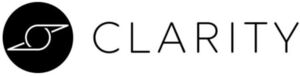

Trade Mark Journal No.2025/022 30 May 2025
WO0000001841580 (9,10,42,44)
Office of origin: United States of America
Date of International Registration:27 September 2023
Date of designation in the UK:
27 September 2023

The mark consists of geometric shape consisting of lines intersecting to form a circle configuration with lines at the top and bottom encompassed within a circle directly next to the word CLARITY in block letters.
International priority date claimed: 27 March 2023
(United States of America)
(97858201)
International priority date claimed: 27 March 2023
(United States of America)
(97858207)
International priority date claimed: 27 March 2023
(United States of America)
(97858211)
International priority date claimed: 27 March 2023
(United States of America)
(97858220)
- Class 9
- Scientific apparatus and instruments, namely, devices and instruments to be placed on the human body and other devices and instruments for measuring and analyzing the body's autonomous nervous system, physical parameters, cognitive function, and other physiological and neurological data, bio-signals and bodily behavior, and for displaying, storing, sending, transmitting and receiving instructions and data relating to any of the above; virtual and augmented reality devices to be placed on the human body and other devices and instruments for measuring and analyzing the body's autonomous nervous system, physical parameters, cognitive function, and other physiological and neurological data, bio-signals and bodily behavior, and for displaying, storing, sending, transmitting and receiving instructions and data relating to any of the above; virtual and augmented reality devices to be placed on the human body and other devices and instruments for improving cognitive and functional abilities, cognitive screening, assessment, diagnosis, and intervention, and for displaying, storing, sending, transmitting and receiving instructions and data relating to any of the above, for purposes other than medical and therapeutic purposes; cases, structural components, replacement parts and fittings specially adapted for the aforesaid goods; downloadable computer programs and databases for measurement and analysis of the body's autonomous nervous system, physical parameters and other physiological and neurological data, bio-signals and bodily behavior, cognitive functions and the body recovery from physical and emotional stress, and for displaying, storing, sending, transmitting and receiving of instructions and data relating to any of the above; downloadable computer programs for measurement and analysis of the body's autonomous nervous system, physical parameters and other physiological and neurological data, bio-signals and bodily behavior, cognitive functions and the body recovery from physical and emotional stress, and for displaying, storing, sending, transmitting and receiving of instructions and data relating to any of the above; downloadable and recorded software for cognitive screening, assessment, diagnosis, intervention, improving cognitive and functional abilities, tracking behavior and symptoms with respect to cognitive function; downloadable and recorded virtual and augmented reality software for cognitive screening, assessment, diagnosis, intervention, improving cognitive and functional abilities, tracking behavior and symptoms with respect to cognitive function; downloadable and recorded software and downloadable mobile applications for cognitive functioning management; downloadable mobile applications for accessing information and educational resources for patients, providers and researchers related to cognitive functioning diagnosis, treatment and management.
- Class 10
- Medical devices, namely, devices and instruments to be placed on the human body and other devices and instruments for measuring and analyzing the body's autonomous nervous system, physical parameters, cognitive function, and other physiological and neurological data, bio-signals and bodily behavior, and for displaying, storing, sending, transmitting and receiving instructions and data relating to any of the above; therapeutic facial masks; LED masks for therapeutic purposes; electrodes for medical use; neuromodulation devices for therapeutic treatments; virtual and augmented reality devices for therapeutic purposes; medical devices, namely, virtual and augmented reality devices to be placed on the human body and other devices and instruments for measuring and analyzing cognitive functions and the body recovery from physical and emotional stress, and for displaying, storing, sending, transmitting and receiving instructions and data relating to any of the above, for medical and therapeutic purposes; cases, structural components, replacement parts and fittings specially adapted for the aforesaid goods.
- Class 42
- Medical and scientific research relating to the measurement, analysis and improvement of physical and neurological abilities; medical and scientific research relating to cognitive screening, assessment, diagnosis, and intervention; software design and development; software development in the field of video games that improve cognition; software development in the field of virtual and augmented reality; design and development of neuromodulation devices; software as a service (SaaS) services featuring software for the treatment of neurological disorders, namely, software for healthcare providers to access and analyze information and data from and to provide information and therapy to patients with neurological disorders.
- Class 44
- Providing healthcare and wellness information; medical evaluation services for measurement and analysis of the body's autonomous nervous system, physical parameters and other physiological and neurological data and bio-signals for diagnostic or treatment purposes; providing healthcare and wellness advice, consultancy, and information on physical and cognitive health monitoring, measurement, analysis, diagnosis, intervention and improvement; remote monitoring of data indicative of the health or condition of an individual or group of individuals for medical diagnosis and treatment purposes; health assessment services; providing wellness services in the field of healthcare, namely, namely, personalized assessments, personalized routines, and counseling; consulting services in the field of brain health; healthcare services and counseling for the personal welfare of people; providing healthcare, brain health and wellness information via a website; providing information and advice in the field of healthcare and wellness, namely, health care and medical treatment; providing healthcare, wellness, and medical information via a website; providing healthcare and wellness information and advice in the field of physical and cognitive health monitoring, measurement, analysis, diagnosis, intervention and improvement by means of a call center, help desk and service desk; internet-based health care information services.
CLARITY HEALTH TECHNOLOGIES, INC.
Representative: Megan Q. Peccarelli of Orrick, Herrington & Sutcliffe LLP, 2050 Main St., Suite 1100, Irvine CA 92614, UNITED STATES OF AMERICA